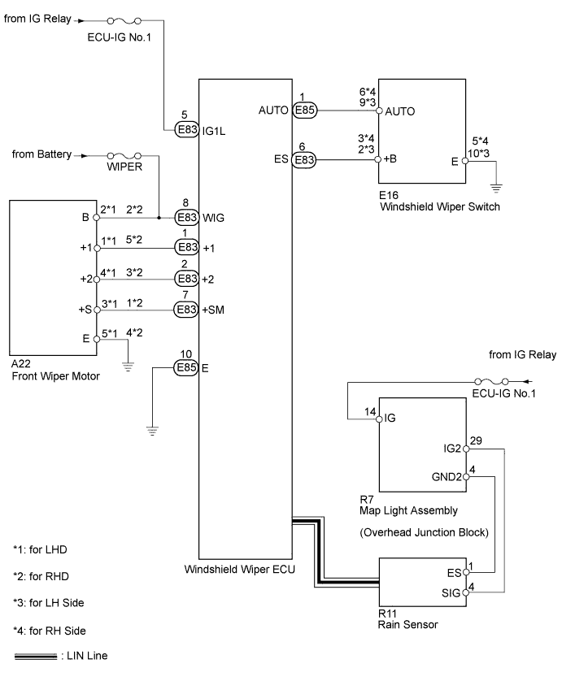

WIPER AND WASHER SYSTEM (w/ Rain Sensor) > Rain Sensor Circuit |

| 1.CHECK WIPER |
Check the symptoms of the wiper. Check if the causes of the symptoms are any of the following conditions shown in the charts.
| Condition | Note |
| Windshield wiper switch in position other than AUTO | Wiper only operates at AUTO setting |
| Rain sensor temperature is -10°C (14°F) or less, or 70°C (158°F) or more |
|
| It is drizzling, or there is scattered rain | If rain droplets do not contact rain sensor, or rain droplets are very small, they are not detected |
| Condition | Note |
| Condensation on windshield | Wiper may operate if condensation occurs in rain sensor detection area. If condensation recurs after rain sensor detection area is wiped, wiper operation may continue. |
| Sun rays are strong | If sudden changes in light intensity occur, wiper may operate |
| Sudden temperature changes | If sudden changes in temperature occur (A/C heater is used in winter, etc.), wiper may operate |
| Object is contacting rain sensor | If inner mirror contacts or strikes rain sensor, wiper may operate |
| Windshield wiper switch off by AUTO | Wiper operates 1 time after windshield wiper switch is turned off by AUTO |
| Condition | Note |
| Rain sensor detects rain amount when wipers are operating. When rain is not completely wiped off by wipers, decrease in ability to detect amount of rain occurs. |
|
|
| Wiper volume is set to minimum | Minimum wiper volume setting is designed to be non-sensitive (for users who prefer non-sensitive operation), resulting in irregular wiper operation |
| Problem with wiper motor position signal | When wiper motor position signal has chattering, wiper may operate excessively. During auto wiper operation inspection, if wiper operates several times, and replacement of rain sensor does not correct problem, wiper motor may be malfunctioning. |
|
| ||||
| OK | ||
| ||
| 2.CHECK WIPER OPERATION |
Set the windshield wiper switch to the LO and HI setting, and check that the wipers operate normally.
|
| ||||
| OK | |
| 3.CHECK WINDSHIELD WIPER SWITCH |
Set the windshield wiper switch to AUTO, and check the problem symptom.
| Result | Proceed to |
| It is raining but wiper does not operate | A |
| It is not raining but wiper operates | B |
|
| ||||
| A | |
| 4.CHECK OPERATION OF WIPER |
Check operation of the wipers.
| Result | Proceed to |
| Wiper does not operate normally | A |
| It is raining but wiper does not operate | B |
|
| ||||
| A | |
| 5.CHECK WIPER RUBBER |
Activate the washer and check the wiping ability of the wiper.
|
| ||||
| OK | |
| 6.READ VALUE USING INTELLIGENT TESTER (COMBINATION SWITCH) |
Check the Data List for proper functioning of the combination switch.
| Tester Display | Measurement Item / Range | Normal Condition | Diagnostic Note |
| F Wiper AUTO Switch | Front wiper AUTO switch / ON or OFF | ON: Front wiper switch in AUTO position OFF: Wiper switch not in AUTO position | - |
|
| ||||
| OK | |
| 7.CHECK RAIN SENSOR |
Check that the rain sensor is installed properly.
|
| ||||
| OK | |
| 8.READ VALUE USING INTELLIGENT TESTER (RAIN SENSOR) |
Check the Data List for proper functioning of the rain sensor.
| Tester Display | Measurement Item/Range | Normal Condition | Diagnostic Note |
| Rain Sensor Cold | Rain sensor cold / COLD or OK | COLD: Front wiper switch in AUTO position OK: Wiper switch not in AUTO position | - |
| Rain Sensor Hot | Rain sensor cold / HOT or OK | HOT: Front wiper switch in AUTO position OK: Wiper switch not in AUTO position | - |
|
| ||||
| OK | |
| 9.CHECK RAIN SENSOR |
Set the windshield wiper switch to AUTO. Flatten the end of a cotton swab soaked with water so that it is 4 to 6 mm (0.157 to 0.236 in.) wide. Touch the swab to the rain sensor detection area and check that the wiper LO operation occurs once.

| Result | Proceed to |
| Wiper does not operate | A |
| Wiper operates normally | B |
| Any other operation | C |
|
| ||||
|
| ||||
| A | ||
| ||
| 10.CHECK RAIN SENSOR |
Check that the rain sensor is installed properly.
|
| ||||
| OK | ||
| ||